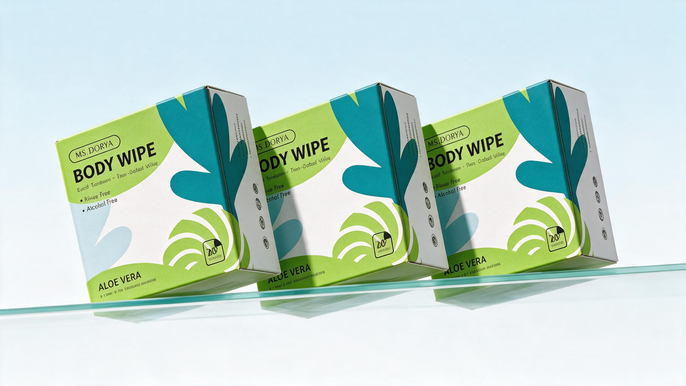
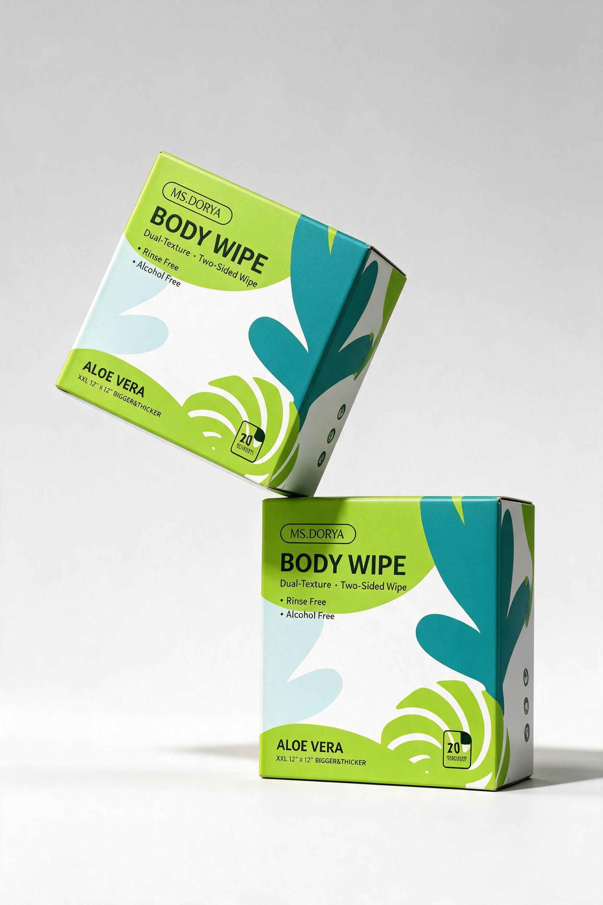
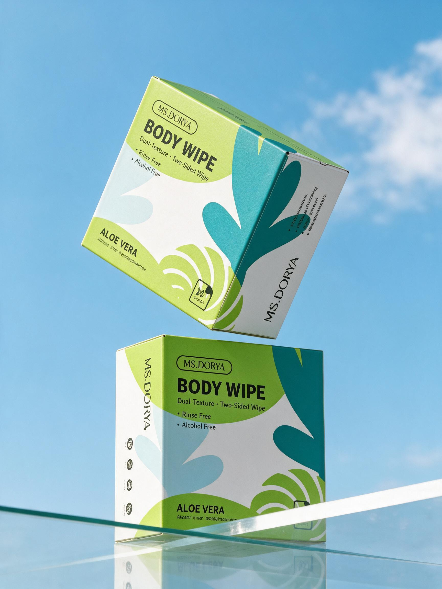
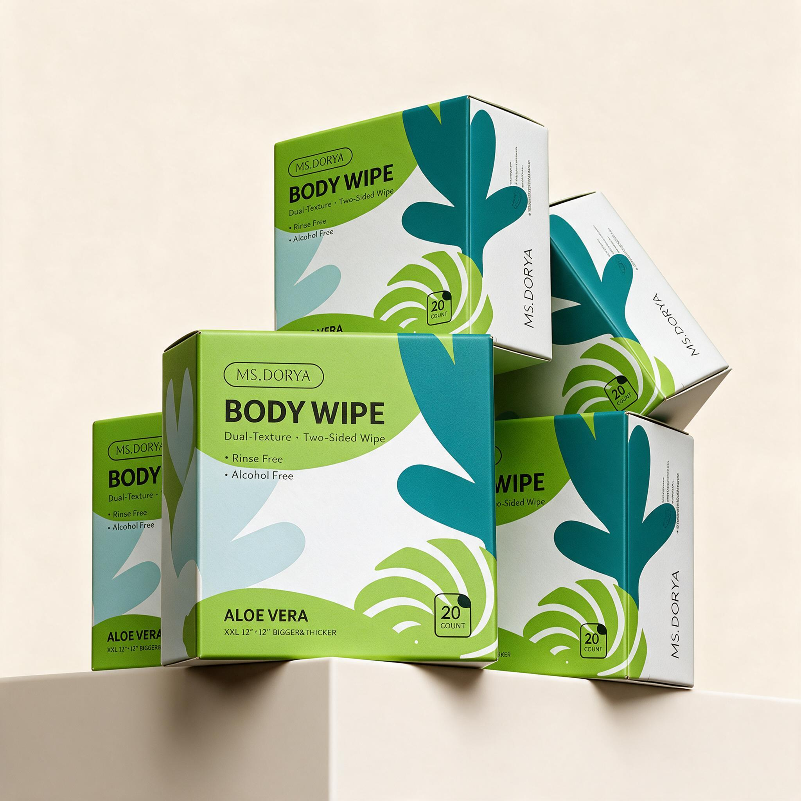

双面双效纹理，满足不同清洁需求。
Body wipes packaging designClean.
Clean.
Anywhere.
MS.DORY 身体便携湿巾系列包装与刀线结构设计。为运动、旅行与日常护理建立清晰、轻盈且便于识别的包装系统。

01 / Project overview便携之下，
便携之下，
仍然完整。
项目面向热爱户外运动、健身、差旅以及注重个人护理的消费者。设计目标是用科学的刀线结构和直观的视觉语言，清楚传达大尺寸、免洗、环保与温和护理等核心价值。
包装正面以高对比产品名建立第一信息层级，抽象植物叶片跨越盒身各面，既形成系列识别，也让方正纸盒获得流动、清新的视觉感受。
Travel 旅行Gym 健身Outdoor 户外Personal Care 日常护理


02 / Key selling points功能，
功能，
一眼可读。
将规格、配方和可持续信息拆分为短句与图标模块，控制阅读顺序，让消费者无需翻找就能快速理解产品。
免水洗，随时随地保持清爽。
无酒精配方，温和不刺激。
平衡配方，呵护肌肤天然屏障。
可生物降解材质与天然清洁成分。
加厚大尺寸，20 片装，单片满足全身清洁。
03 / Dieline & structure每一条线，
每一条线，
都服务于开启。
Flat size730 × 355 mm
Formed size155 × 155 × 100 mm
采用一体成型折叠纸盒结构，通过压线与锁扣插舌提升运输稳定性。顶部弧形翻盖配合易撕虚线，在密封保护与日常抽取之间取得平衡。
Glue155100155100155Lock
STRUCTURAL RHYTHM · 主视面、侧面与插舌按成型尺寸展开，形成 730 mm 横向刀线结构示意。04 / SKU colorway两种体验，
两种体验，
一个家族。
以相同的抽象叶片和信息骨架维持品牌一致性，再通过主色比例改变产品感受，让消费者在货架上快速区分不同 SKU。
Alive & gentle.
草绿色与局部蓝色交织，强调天然植物、滋润与温和护理。
Pure & quiet.
以清爽蓝色为主、绿色点缀，传达纯净、低负担与无香护理体验。

05 / Lifestyle applicationMove light.
Move light.
Stay fresh.
通过户外使用、随身携带与购物场景，让便携尺寸和真实使用方式直接可见，建立从包装视觉到生活体验的完整联系。